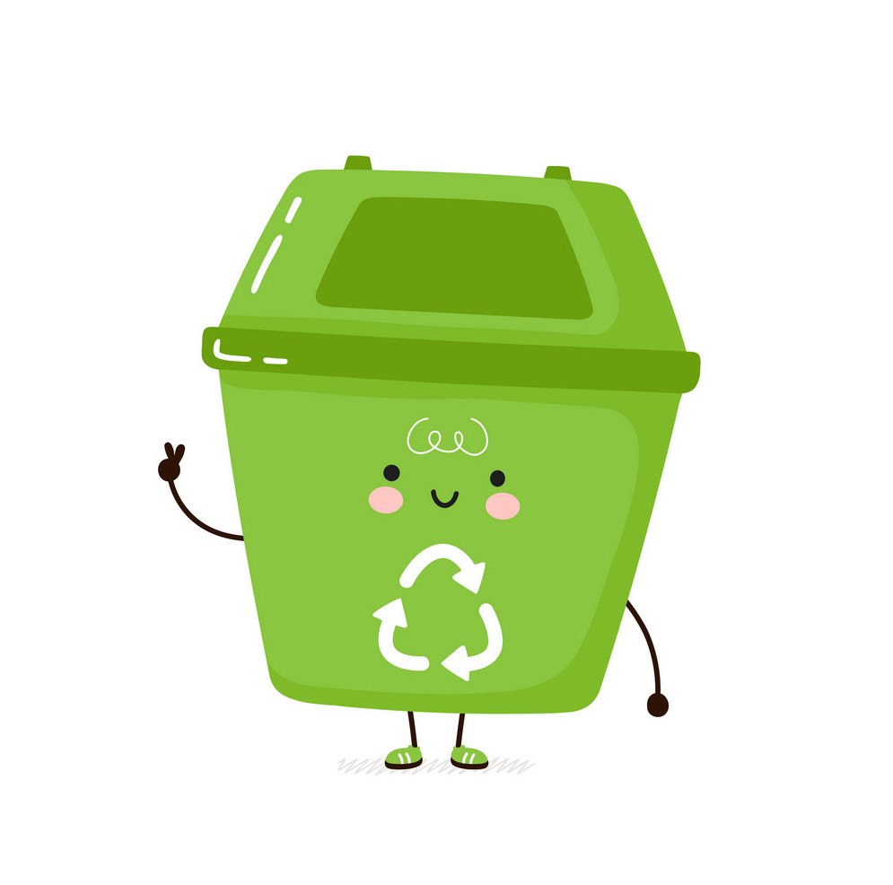

Know the places..
It needs time and patience to spread the culture of recycling among a
community.
We are starting slowly, here in Lebanon, but we are moving forward luckily.
Here are few initiatives in Lebanon to collect your recycables.
@recycler_donation
You can either take your trash to their designated locations or give them a call and they will come pick it up!
@liveloverecycle
It is a service available in Beirut, Tripoli and Jounieh. Download their app, choose your location, and they will be right at your door to pick up your recycables!
Spinneys
You can take all your plastic bottles and put them in the recycling area, usually a huge trash can, in most of Spinneys branches across Lebanon.